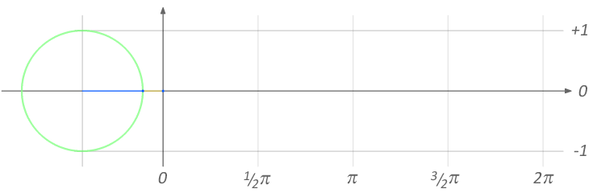

A sine wave is a fundamental type of wave, with smooth, repeating, and symmetrical curves that oscillates regularly between maximum and minimum values. Sine waves are characterised by its frequency, which determines how quickly it repeats, and its amplitude, which indicates height.

let xspacing = 16;
let w;
let theta = 0.0;
let amplitude = 75.0;
let period = 500.0;
let dx;
let yvalues;
function setup() {
strokeWeight(1)
createCanvas(windowWidth, 500);
w = width + 16;
dx = (TWO_PI / period) * xspacing
yvalues = new Array(floor(w / xspacing))
}
function draw() {
background(255);
calcWave()
renderWave();
}
function calcWave(){
theta += 0.02
let x = theta;
for(let i = 0; i < yvalues.length; i++){
yvalues[i] = sin(x) * amplitude;
x += dx;
}
}
function renderWave(){
noStroke()
fill(0)
for(let x = 0; x < yvalues.length; x++){
ellipse(x * xspacing, height / 2 + yvalues[x], 16, 16)
}
}